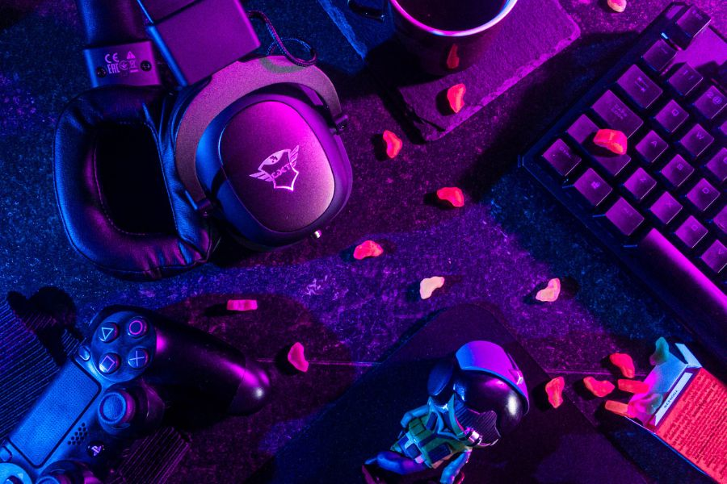

Explore PS Gaming & Accessories at Techkudil – Your Local Gaming Hub
Gaming has evolved from a casual pastime into a central entertainment experience for millions of people across the world, and for many homes in India, the PlayStation has become more than just a console—it is a personal entertainment hub, a stress-reliever, a companion during long weekends, and a shared link between family and friends. As the gaming community grows, so does the responsibility of ensuring these high-performance machines work at their absolute best. At Techkudil, we understand the emotional connection gamers have with their PlayStations, whether it’s a PS3 passed down from a sibling, a PS4 that has survived countless hours of gameplay, or a brand-new PS5 that represents the next generation of immersive entertainment. This is why our PlayStation service division is built not merely around repair work but around restoring a gamer’s joy, comfort, and uninterrupted gaming life. Each PlayStation that enters our service center is treated as a machine that carries memories, victories, and personal experiences, and our goal is to preserve all of that with precision-driven care.
Most gamers only realize how much they rely on their PlayStation consoles when something goes wrong. A sudden overheating problem, a loud fan noise that interrupts gameplay, a controller that refuses to connect, a console that stops reading game discs, or an HDMI port that shows no display can bring gaming plans to a complete halt. These issues often appear at the worst possible times—during online tournaments, at the climax of a story mission, or on weekends when players finally have the time to relax. At Techkudil, we have seen the frustration on customers’ faces when they bring in their console hoping for a miracle. That is exactly why we built a repair process that focuses on speed without sacrificing quality. We believe that a gamer should never be away from their console for too long, and this philosophy drives every step of our workflow, from diagnosis to final testing.
PlayStation consoles, especially PS4 and PS5, are powerful systems engineered with advanced internal components that operate under heavy load. With time, dust accumulation, thermal paste drying, fan degradation, and environmental factors like humidity or poor ventilation start affecting performance. Gamers frequently assume these problems are normal or unavoidable, but in reality, most issues can be prevented or reversed with proper care. When a customer brings a console to Techkudil with overheating complaints or loud fan noise, our technicians do a deep internal inspection, carefully dismantling the system to access the heat sink, processor area, fan assembly, and power supply. We then clean the internal components using anti-static tools, replace the thermal paste with high-quality material suitable for gaming consoles, and ensure that all parts are perfectly realigned to maximize cooling efficiency. This single process has revived countless consoles that gamers thought were beyond repair.
Disc-reading issues are another extremely common problem, especially with PS4 consoles. Sometimes the system rejects discs, takes too long to load games, or makes unusual noises when a disc is inserted. Many gamers panic at this stage, thinking the Blu-ray drive is completely dead. In reality, the issue is often related to lens failure, misalignment, or problems with the rollers that pull the disc inside the console. At Techkudil, we handle these repairs with extreme precision because the Blu-ray drive is a sensitive part that requires micro-level adjustments. We treat each unit with specialized tools designed for console repair, ensuring the drive is restored to optimal performance without compromising the rest of the system. Our goal is always to fix the problem at component level rather than replacing the entire part, which helps reduce cost for the customer while maintaining the originality of the console.
As gamers shift to digital gaming and online multiplayer modes, HDMI port failures have become one of the most frustrating issues for PlayStation users. A damaged HDMI port results in no display, distorted images, flickering screens, or random signal loss. These problems often occur when the console is moved frequently, when cables are yanked accidentally, or when cheap HDMI cables are used. Replacing an HDMI port is a delicate process that requires micro-soldering skills and precise temperature control. At Techkudil, our technicians are trained to handle these repairs using advanced soldering stations and microscopes to ensure every pin is aligned perfectly. This type of repair is one of the specialised services that makes Techkudil stand out in the gaming repair industry, as not all service shops have the capability or expertise to perform micro-soldering repairs correctly.
One of the unique aspects of Techkudil’s PlayStation service is our focus on understanding the customer’s usage pattern. Many gamers use their consoles for long hours, and some even for continuous streaming of movies, music, and OTT content. This means their consoles are in operation for much longer than average use. When such customers bring in their system for a problem, we not only fix the existing issue but also perform preventive maintenance to avoid future failures. For example, if a gamer uses the console for prolonged hours, we might recommend installing a dust filter, improving ventilation placement, or scheduling periodic internal cleaning every six months. This personalized guidance helps gamers get maximum life and performance out of their consoles, and it builds trust that goes beyond simple repair service.
Another important part of our workflow is our diagnostic process, which is carefully structured to identify both visible and hidden issues in a console. When a PlayStation arrives at our service center, we begin with a thorough external inspection, checking for physical damage, missing screws, cracks in the casing, and other signs of mishandling. Next, we connect the console to our testing setup where we evaluate display output, loading times, thermal performance, and controller communication. If the customer reports a specific issue, we replicate it in real-time to observe patterns. Once the initial diagnosis is complete, our technicians open the console to check the internal components. This systematic approach reduces the possibility of overlooking interconnected issues and allows us to offer accurate quotations and time estimates.
Gamers are also often concerned about their save data, trophies, downloaded games, and account information. We understand how valuable this digital content is, especially for players who have spent hundreds of hours building game progress. At Techkudil, we handle every console with extreme caution to ensure no data loss occurs during service. Most hardware repairs do not affect data unless the hard drive itself is faulty, in which case we discuss all options with the customer before proceeding. When possible, we back up data or suggest the customer sync their account so that their progress remains safe. This transparency is part of what makes customers trust Techkudil for sensitive gaming console repairs.
Our expertise also extends to PlayStation controllers, which are an essential part of the gaming experience. Stick drift, button failures, connectivity issues, and charging port damages are common complaints. Instead of recommending an expensive full replacement, we perform part-level repairs by fixing the analog module, replacing individual buttons, repairing the charging port, or restoring the internal ribbon cables. Many gamers are surprised when we restore their controller to like-new performance at a fraction of the cost of a new controller. By saving money for customers while maintaining high standards of repair quality, Techkudil has become a preferred destination for controller servicing as well.
Another major area where Techkudil excels is PlayStation software troubleshooting. System update failures, corrupted game files, firmware errors, and storage problems can render a console unusable. Many customers bring their console thinking it has a major hardware issue when the real problem is software-related. Our technicians perform safe-mode recovery, database rebuilding, storage repair, firmware installation, and system reset depending on the issue. We also analyze slow performance problems caused by full storage or fragmented databases and optimize the console for faster performance. This level of technical depth ensures that customers receive complete service—covering both hardware and software under one roof.
What truly sets Techkudil apart is the level of transparency we maintain throughout the entire service cycle. Customers are kept informed about every stage, from diagnosis to repair and final testing. Before any repair begins, we provide a clear explanation of the issue, the repair method, expected results, estimated time, and total cost. There are no hidden charges or surprise costs. After the repair is complete, we demonstrate the console’s improved performance in front of the customer for verification and satisfaction. This complete transparency has built long-term customer relationships and has made Techkudil one of the most trusted PlayStation service providers in the region.
In addition to repairs, we also guide customers on upgrades that enhance gaming performance. For example, PS4 users can upgrade their hard drive to an SSD for faster loading times, smoother gameplay, and overall improved performance. We also help customers install internal storage properly, ensuring compatibility and data integrity. For PS5 owners, we provide guidance on choosing the correct NVMe SSDs with appropriate heatsinks, ensuring that their console remains optimized for high-speed gaming. By offering both repair and upgrade services, Techkudil becomes a complete solution center for all PlayStation needs.
Finally, Techkudil’s commitment to quality does not end when a console is returned. We offer after-service support where customers can reach out in case they have questions or face new issues. Our aim is not to simply fix a console but to support gamers throughout their ownership journey. With genuine parts, skilled technicians, advanced tools, and an understanding of gamer requirements, Techkudil stands as one of the most reliable and respected destinations for PlayStation repairs.